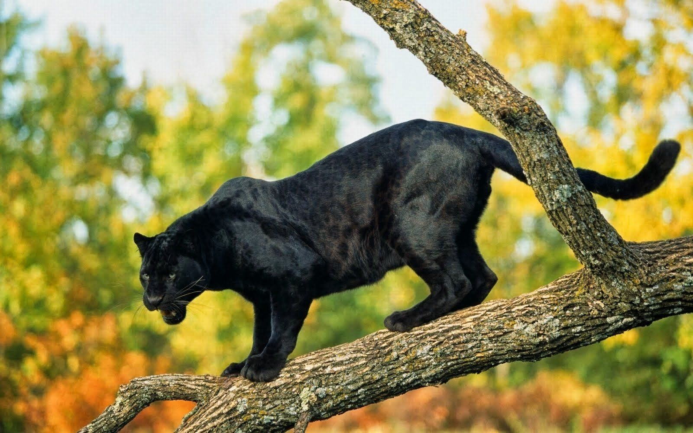

La pantera negra es una variación negra (melanismo) de varias especies de grandes félidos, en especial del leopardo (Panthera pardus) y del jaguar (Panthera onca). Pero cabe recalcar que no es una nueva especie, ni siquiera una subespecie, es simplemente una variación negra de estos animales. Existe cierta confusión con las palabras pantera y leopardo. Por un lado, Panthera es un género taxonómico de félidos que incluye cinco especies: los mencionados leopardo y jaguar, así como el león (Panthera leo), el tigre (Panthera tigris) y el leopardo de las nieves (Panthera uncia). Por otra parte, existe el género Leopardus, que incluye varias especies de felinos americanos, entre ellas el ocelote (Leopardus pardalis). El nombre del género fue escogido por el parecido superficial del ocelote con el leopardo en lo referente al color y moteado del pelaje; no obstante, conviene recordar que el leopardo pertenece a otro género (Panthera). Finalmente, existe la palabra española pantera, que se usa en otro sentido al nombre científico del género Panthera, ya que nadie llama pantera al león o al tigre, a pesar de pertenecer a dicho género.
El melanismo es muy común en los jaguares (Panthera onca), que es común en los genes gracias a un alelo dominante, y en los leopardos (Panthera pardus), gracias a un alelo recesivo.1 Las típicas marcas de estos animales se mantienen, pero se ven ocultas por el color negro producido por la melanina. El albinismo y el leucismo son los efectos contrarios al producido por el melanismo. En una camada de cachorros puede haber crías con melanismo y otras con un pelaje normal. Se cree que la tonalidad oscura en el pelaje, es una ventaja electiva en ciertas ocasiones; ya que son más comunes, en los bosques densos, donde los niveles de luz son más bajos.
 Los ojos de la pantera negra son de color verde intenso y también las hay de ojos azul claro, amarillos y dorados. Como la mayoría de los felinos los machos se pelean por las hembras en celo y el ganador permanecerá con la hembra unos tres días y en ese periodo de tiempo la copula por un solo día, que es el tiempo en que ambos (macho y hembra) permanecen juntos para procrear, luego de lo cual es el macho quien se retira. La vida sexual de las panteras comienza aproximadamente a los dos años de vida. El periodo de gestación es de unos tres meses y paren unos cuatro cachorros que nacen ciegos, permaneciendo así durante el primer mes de vida y siendo amamantados hasta los seis meses. Las crías comenzarán a comer carne a los tres meses, y permanecerán con su madre hasta los dos años. Miden alrededor de 1,50 m de largo, su cola mide un metro, tienen un tamaño de unos 65,05 cm y pesan unos 90/5 kg en el caso de los machos, las hembras son más pequeñas y pesan alrededor de 58,06-60,08 kg Tienen una excelente visión nocturna similar a los gatos, y cazan en la oscuridad de la noche, actuando en forma lenta, cauta y sigilosa, pues no les gusta cazar en correrías y por este motivo se les denomina el fantasma de la noche. Cazan en solitario y solo se relacionan con otras panteras en época de apareamiento o celo. Pasan parte del día limpiándose la piel, para eliminar de ella el olor que dejan sus presas. Son excelentes trepadores de árboles, en los que descansan y desde los que también acechan, resguardan y comen sus presas. Les gusta nadar y a diferencia de los leopardos prefieren las zonas inundadas para vivir. Aunque no lo parezca a simple vista, tienen manchas como las de los leopardos, pero no se ven tan fácilmente, ya que como la misma pantera es negra en color y las manchas también, son difíciles de distinguir.
Los ojos de la pantera negra son de color verde intenso y también las hay de ojos azul claro, amarillos y dorados. Como la mayoría de los felinos los machos se pelean por las hembras en celo y el ganador permanecerá con la hembra unos tres días y en ese periodo de tiempo la copula por un solo día, que es el tiempo en que ambos (macho y hembra) permanecen juntos para procrear, luego de lo cual es el macho quien se retira. La vida sexual de las panteras comienza aproximadamente a los dos años de vida. El periodo de gestación es de unos tres meses y paren unos cuatro cachorros que nacen ciegos, permaneciendo así durante el primer mes de vida y siendo amamantados hasta los seis meses. Las crías comenzarán a comer carne a los tres meses, y permanecerán con su madre hasta los dos años. Miden alrededor de 1,50 m de largo, su cola mide un metro, tienen un tamaño de unos 65,05 cm y pesan unos 90/5 kg en el caso de los machos, las hembras son más pequeñas y pesan alrededor de 58,06-60,08 kg Tienen una excelente visión nocturna similar a los gatos, y cazan en la oscuridad de la noche, actuando en forma lenta, cauta y sigilosa, pues no les gusta cazar en correrías y por este motivo se les denomina el fantasma de la noche. Cazan en solitario y solo se relacionan con otras panteras en época de apareamiento o celo. Pasan parte del día limpiándose la piel, para eliminar de ella el olor que dejan sus presas. Son excelentes trepadores de árboles, en los que descansan y desde los que también acechan, resguardan y comen sus presas. Les gusta nadar y a diferencia de los leopardos prefieren las zonas inundadas para vivir. Aunque no lo parezca a simple vista, tienen manchas como las de los leopardos, pero no se ven tan fácilmente, ya que como la misma pantera es negra en color y las manchas también, son difíciles de distinguir.